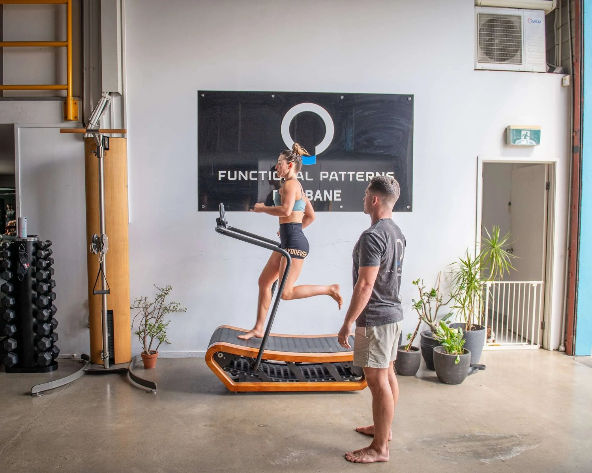
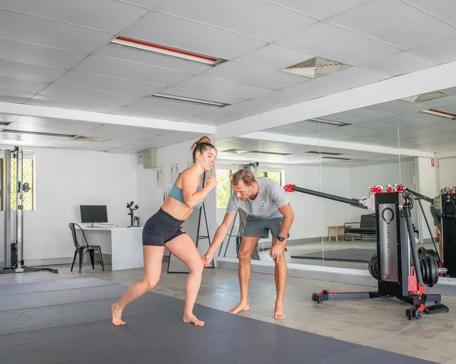

Posture Correction & Biomechanics Assessment | Functional Patterns Brisbane
If you’re searching for workouts to fix posture in Brisbane, chances are you’ve already tried:
-
Posture stretches
-
Pilates
-
Core strengthening
-
Gym programs
-
Shoulder blade squeezes
-
“Stand up straight” cues
And yet your posture keeps returning to the same position.
Rounded shoulders.
Forward head.
Lower back tightness.
Pelvic tilt.
Recurring neck pain.
The problem isn’t that you haven’t done enough exercises.
The problem is that posture is not fixed by workouts alone.
At Functional Patterns Brisbane, posture correction is approached through biomechanics — not isolated drills.

Why Exercises to Fix Posture Often Fail
Most exercises to fix posture focus on:
-
Strengthening “weak” muscles
-
Stretching “tight” muscles
-
Holding neutral spine
But posture is not a static alignment problem.
It’s a dynamic load problem.
If your walking pattern reinforces asymmetry every single day, your posture adapts to that pattern.
If your pelvis rotates slightly with each step, your spine compensates.
If your rib cage collapses on one side, your shoulders follow.
You cannot override thousands of daily steps with five minutes of posture exercises.
That’s why most workouts to fix posture provide temporary relief — not structural change.

What Posture Actually Reflects
Your posture reflects:
-
How your body handles gravity
-
How your pelvis loads
-
How your rib cage expands
-
How your hips rotate
-
How your gait distributes force
It is an output of movement.
Trying to fix bad posture without correcting movement mechanics is like adjusting the steering wheel on a misaligned car.
The system will always default back.
The Brisbane Lifestyle Factor
Living and working in Brisbane creates predictable mechanical stress patterns.
Many of our clients in:
-
Bulimba
-
Hawthorne
-
Balmoral
-
New Farm
-
Hamilton
-
Camp Hill
-
Carindale

spend long hours:
-
Sitting at desks
-
Driving
-
Working from home
-
Training at commercial gyms
These environments reinforce:
-
Hip flexion dominance
-
Thoracic compression
-
Forward head posture
-
Reduced hip internal rotation
Adding more random posture stretches doesn’t change the structural load patterns being reinforced daily.

What Actually Improves Posture Long-Term
If you’re serious about posture correction in Brisbane, improvement requires addressing the system that creates posture.
At Functional Patterns Brisbane, this begins with assessment — not a generic program.
Here’s what actually matters:
1. Gait Mechanics
Your walking pattern shapes your posture every day.
If gait is asymmetrical, posture becomes asymmetrical.
Improving posture means improving how force transfers through the feet, hips and spine during locomotion.
Gait assessment is foundational in our Brisbane posture evaluations.
2. Pelvic Position & Load Distribution
The pelvis determines spinal orientation.
If one side of the pelvis loads differently than the other, the spine compensates.
Many people trying to fix bad posture never assess pelvic mechanics.
Without pelvic correction, upper body posture rarely holds.
3. Rib Cage & Breathing Mechanics
Breathing influences thoracic positioning.
If rib cage expansion is asymmetrical, shoulder and neck tension follow.
Correct posture is not achieved by pulling the shoulders back.
It is achieved by restoring balanced expansion and rotation.
4. Rotational Symmetry
Humans are rotational.
Walking, running and training are contralateral patterns.
When one side dominates, posture reflects that dominance.
Restoring rotational balance is key to long-term posture correction.
Posture Correction vs “Back and Posture Exercises”
When people search “back and posture exercises Brisbane,” they usually want a list.
But lists don’t fix biomechanics.
Posture correction is not:
-
A stretch routine
-
A strengthening checklist
-
A posture brace
-
A taping strategy
It’s a retraining process.
At Functional Patterns Brisbane, posture improves as a byproduct of:
-
Improved gait
-
Improved load transfer
-
Reduced asymmetry
-
Integrated strength under rotational demand
Posture changes because movement changes.

Who This Is For
You may need a biomechanics assessment in Brisbane if you experience:
-
Chronic neck pain
-
Rounded shoulders that won’t correct
-
Pelvic tilt
-
Recurring lower back discomfort
-
Hamstring tightness that keeps returning
-
Shoulder impingement
-
Sciatica symptoms
If posture exercises haven’t worked, the issue is likely deeper than muscle tightness.
Why Choose Functional Patterns Brisbane?
We are not a general gym.
We are not a generic physio clinic.
Functional Patterns Brisbane specialises in:
-
Posture correction
-
Gait retraining
-
Chronic pain resolution
-
Asymmetry reduction
-
Structural biomechanics
Our approach integrates:
-
Movement analysis
-
Progressive loading
-
Rotational mechanics
-
Strength under coordination
We don’t guess.
We assess.
Posture Assessment in Brisbane
If you’re in Brisbane’s inner suburbs and serious about fixing posture long-term, the first step is assessment.
A posture assessment at Functional Patterns Brisbane includes:
-
Structural alignment review
-
Gait evaluation
-
Rotational bias identification
-
Pelvic positioning analysis
-
Load distribution mapping
From there, a structured retraining plan is developed.
Not a random list of exercises.
Final Thoughts
Searching for workouts to fix posture in Brisbane makes sense.
But posture is not corrected by workouts alone.
It is corrected by changing how your body organises force under gravity.
When movement improves, posture improves.
If you’re ready for long-term structural change rather than temporary relief, start with a biomechanics assessment at Functional Patterns Brisbane.